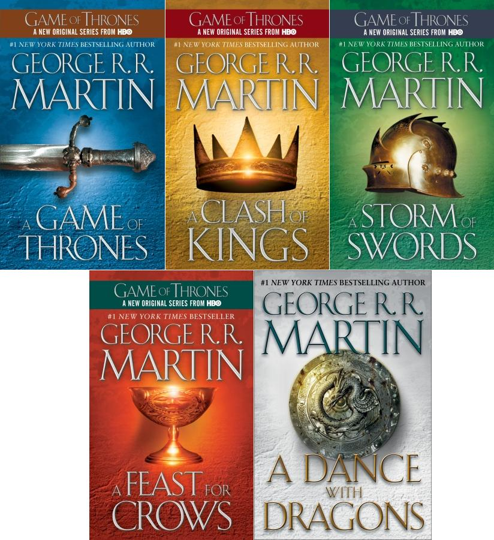

Who am I
I'm a programming rookie, who's completed a Masters programme of Applied Linguistics faculty in Lviv National Politechnic University.
Favourite books of mine
A Song of ice and fire by George R.R. Martin

by Jerome D. Salinger
by Albert Camus
by Franz Kafka
etc.
Sports
I'm a huge football fan. Of late, I've been a fan of a person that makes the modern football brighter, puts his heart to the job and demands the same from his players. It's Jurgen Klopp, of course.
Astronomy
Our Universe is bizzare. With all its elements: planets, stars, nebulas, galaxies, black holes it's the most fascinating object in our lives
Accents
The English language may not be the most practical one or the most beautiful one, but it is simple enough to be the international Lingua Franca. There's one thing, however, that doesn't add jack to its simpleness. It's accents. Here's a video of Andrew Jack explaining British accents in the respective accents